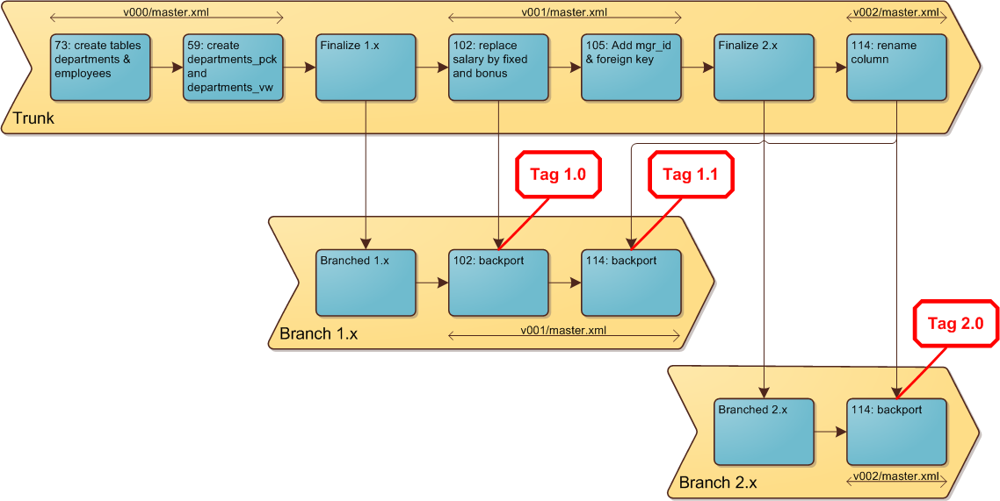
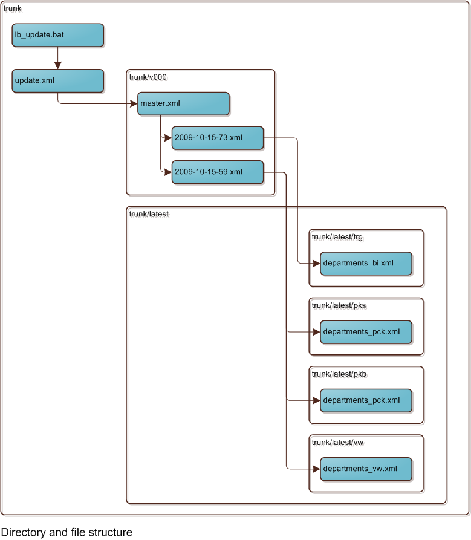

This is a
The scenario we will be using for the tutorial assumes we are developing an application for two customers named Solo and Duplex. Each customer has their own upgrade timing.
| Time | Solo | Duplex |
|---|---|---|
| t1 | install r1.0 | |
| t2 | patch to r1.1 | |
| t3 | upgrade to r2.0 | install r2.0 |
During the life cycle of an application, the development team may produce thousands of database changes. Periodically, we will want to consolidate these changes so that a fresh install can be done rapidly (also essential for the continuous integration environment), and so that we can ship a smaller set of changes to customers for upgrading.
The chosen strategy is to clean up the
| Script | Description | Create | Upgrade from X-1 | Apply latest changes to version |
|---|---|---|---|---|
lb_install
|
Perform fresh install for version X | X | X | |
lb_upgrade_to_major
|
Upgrade from (X-1) to X | X | X | |
lb_update
|
Upgrade within same major version, such as 1.1 to 1.5 | X |
The directory structure we will build during this tutorial is shown below (assuming that we are delivering version 5.x). Instead of using a Subversion server, we will use a local repository in the repo directory.
D:\projects
+-- lbdemo
+-- repo <-- Subversion repository
+-- trunk <-- Working directory
+-- install <-- Installation changelogs
+-- latest <-- Changelogs for replaceable objects (packages, triggers, views)
+-- v004 <-- Changelogs to upgrade from version 4.0
+-- v005 <-- Changelogs to upgrade from version 5.0lb_install: A fresh install for version 5.0 will run:
installlatest creating "replaceable" objects
lb_upgrade_to_major: An upgrade from version 4.x to 5.0 will run:
v004v005lb_update: An update from version 5.x will run:
v005The scenario for this tutorial is illustrated in the diagram below. Each of the blue boxes is a Subversion revision. The contents of a box is the commit message which describes the change.

If you don't already have an Oracle database available, download Oracle XE from the Oracle Database XE page and install it on your computer. The XE edition of the database is free to use for development and production purposes.
There are many tools available to manage your database objects. If you don't already have such a tool, take a look at SQL Developer. SQL Developer is available as a free download at the Oracle SQL Developer page.
Oracle JDeveloper is another free tool available from the Oracle Technology Network. It has many features, including the XML editor. This editor is schema-aware, and makes it easy to author your
After downloading and installing, start JDeveloper. If you are behind a proxy, configure the proxy using Tools > Preferences > Web Browser and Proxy.
Next we will add the add. Enter:
| Schema: | http://www.liquibase.org/xml/ns/dbchangelog/dbchangelog-3.8.xsd |
|---|---|
| Extension: | xml |
Press OK and now your JDeveloper is ready to edit your
TortoiseSVN is a graphical front end to Subversion. It also has the capability to create a file based repository. We will use this feature for this tutorial. There is no need for you to have access to a Subversion server. Download TortoiseSVN from http://tortoisesvn.net/. Install it and reboot your PC.
Create the directory structure for this tutorial.
D:
mkdir D:\projects\lbdemo\repoIn Windows Explorer, right-click on directory repo and choose TortoiseSVN > Create repository here. We have now created a Subversion repository.
Right-click on the directory repo again, and choose TortoiseSVN > Repo-browser. The browser displays in a window similar to Windows Explorer. Right-click on the repo directory and choose Create folder ... Enter the name trunk. You will then be prompted for a comment before you commit this change. Enter any comment.
Repeat this to create folders branches and tags.
You should end up with a repository structure that looks like this:
file:///D:/projects/lbdemo/repo
+- branches
+- tags
+- trunkClose the repository browser.
Return to Windows Explorer, navigate to directory D:\projects\lbdemo and right-click in the right panel. Choose SVN Checkout. In the panel that appears, enter:
| URL of repository: | file:///D:/projects/lbdemo/repo/trunk
|
|---|---|
| Checkout directory: | D:\projects\lbdemo\trunk
|
Press OK. A confirmation window will display to create directory trunk. Select Yes. Press OK. In Windows Explorer, the trunk directory will be displayed with a green icon, indicating that it is a working copy with no changes to commit.
Download the Oracle JDBC driver. Click on the link for 10g Release 2 drivers, and choose ojdbc14.jar.
Save the jar in directory: D:\projects\lbdemo.
Install
Add the directory containing the Liquibase.bat file to your PATH. You can use the standard process in Windows or use a tool like Redmond Path.
Test the installation by opening a DOS box in the D:\projects\lbdemo\trunk directory and entering the following command:
liquibase --versionThe result should be something like: Liquibase Version: 1.9.0
Next, create a file named liquibase.properties.template in the trunk directory with the following contents:
#liquibase.properties
driver: oracle.jdbc.OracleDriver
classpath: ../ojdbc14.jar
url: jdbc:oracle:thin:@localhost:1521/XEPDB1
username: tbd
password: tbdthe classpath is relative to the current directory.
Copy this file to liquibase.properties and edit the last two lines to look like this:
#liquibase.properties
driver: oracle.jdbc.OracleDriver
classpath: ../ojdbc14.jar
url: jdbc:oracle:thin:@localhost:1521/XEPDB1
username: lb_dev
password: lb_devThis properties file will save you from specifying these parameters on the command line every time you run a command. We will check the template file into subversion. We will store the file with the real connection details locally.
Right-click on file liquibase.properties and choose TortoiseSVN > Add to ignore list > liquibase.properties.
Right-click on file liquibase.properties.template and choose TortoiseSVN > Add.
Right-click on directory trunk and choose TortoiseSVN > commit.
For our tutorial, we will create these database schemas:
Open SQL Developer and create a connection to your database using the "system" username. You can access this page by going to File > New > Connections > Database connection. Open this connection and run the following commands:
drop user lb_dev cascade;
create user lb_dev identified by lb_dev;
grant connect, resource, create view to lb_dev;
drop user lb_test cascade;
create user lb_test identified by lb_test;
grant connect, resource, create view to lb_test;
drop user lb_solo cascade;
create user lb_solo identified by lb_solo;
grant connect, resource, create view to lb_solo;
drop user lb_duplex cascade;
create user lb_duplex identified by lb_duplex;
grant connect, resource, create view to lb_duplex;In SQL Developer, create a connection for each of these users. This will be useful later.
In this step we will be creating the following directory structure in the trunk directory:
trunk
+-- install
| +-- cst <-- Contains FK constraints, one file per table
| +-- seq <-- Contains sequence definitions, one file per sequence
| +-- tab <-- Contains table definitions, one file per table
+-- latest
| +-- pkb <-- Contains package bodies, one file per package
| +-- pks <-- Contains package specifications, one file per package
| +-- trg <-- Contains triggers, one file per trigger
| +-- vw <-- Contains views, one file per view
+-- v000We will create a separate install directory for the installation of non-replaceable objects (as opposed to the upgrades), and within the install directory a separate directory for each type of object.
Under latest, we have a directory for each type of "replaceable" database object. This means that the object can be updated by simply replacing it by a new version. The SQL syntax for these objects starts with create or replace.
Paste these commands in a DOS box to create the directory structure in one go:
cd \projects\lbdemo\trunk
mkdir install
mkdir install\cst
mkdir install\seq
mkdir install\tab
mkdir latest
mkdir latest\pkb
mkdir latest\pks
mkdir latest\trg
mkdir latest\vw
mkdir v000As we are starting from scratch (version 0), directory v000 will contain the
Create a simple batch file to perform the upgrades:
trunk/lb_update.bat
@echo off
call liquibase --change-log-file=update.xml updateThe file above refers to update.xml, which we will create next.
JDeveloper is a great tool for editing XML files, but creating a new XML file from scratch is a bit cumbersome. The following steps are the quickest way:
trunk/update.xml
<?xml version="1.0" encoding="UTF-8" standalone="no"?>
Create the file that will later contain the includes of each
trunk/v000/master.xml
<?xml version="1.0" encoding="UTF-8" standalone="no"?>
Commit the current version to Subversion. Right-click on directory trunk and select SVN Commit.
Enter a message like "Initial version", select all files/directories, and press OK. Now the files/directories will also be displayed with a green icon in Windows explorer.
Each change (including initial creations) are related to an issue number: a bug or a project task. Our first task (which happens to have number 73) is to create 2 tables.
The file structure which we will be describing has a certain structure which is easier to see if we visualize it. The white boxes are the directories. The blue boxes are the files within the directories. The arrows indicate that one file calls or includes another file.

The description of this task is:
departments, the primary key is populated using a sequence and a triggeremployees with a foreign key to departmentsWe will create one changefile for these changes. It will consist of these changes:
latest/trgCreate the following files:
trunk/v000/2009-10-15-73.xml
<?xml version="1.0" encoding="UTF-8" standalone="no"?>
The table and column remarks will be applied as table and column comments in the database.
trunk/latest/trg/departments_bi.xml
<?xml version="1.0" encoding="UTF-8" standalone="no"?>
The runOnChange="true" attribute. This ensures that we can make future changes in this file and these changes will be applied automatically. Note also that in the file above, we have provided an explicit rollback statement to undo this change.
Update the master.xml to include the change:
trunk/v000/master.xml
<?xml version="1.0" encoding="UTF-8" standalone="no"?>
Now we are ready to test the changes by applying them to the database. Run the batch file we created before:
D:\projects\lbdemo\trunk> lb_updateIf all goes well, you will see a confirmation message: Migration successful.
Now examine the contents of table
liquibase --change-log-file=update.xml rollback-count-sql 3To actually perform the rollback:
liquibase --change-log-file=update.xml rollback-count 3After you have completed and tested your changes, commit them to Subversion with this comment: "73: Create tables departments & employees". The current state is represented by the first box on the diagram at the start of this tutorial.
This description of this task is:
departments_pckdepartments_vwBoth objects are of the "replaceable" type, so a new version can simply replace an older version. The files go into the latest directory. Create or update the following files:
trunk/v000/master.xml (add the new change to the end of the file)
<?xml version="1.0" encoding="UTF-8" standalone="no"?>
trunk/v000/2009-10-15-59.xml
<?xml version="1.0" encoding="UTF-8" standalone="no"?>
trunk/latest/pks/departments_pck.xml
<?xml version="1.0" encoding="UTF-8" standalone="no"?>
trunk/latest/pkb/departments_pck.xml
<?xml version="1.0" encoding="UTF-8" standalone="no"?>
trunk/latest/vw/departments_vw.xml
<?xml version="1.0" encoding="UTF-8" standalone="no"?>
Now we are ready to test the changes by applying them to the database. Run the batch file we created before:
D:\projects\lbdemo\trunk> lb_updateIf all goes well, you will see a confirmation message: Migration successful.
Now examine the contents of table
liquibase --change-log-file=update.xml rollback-count 3After you have completed and tested your changes, commit them to Subversion with comment:"59: create departments_pck and departments_vw".
We could continue in this manner for the remainder of the project. At some point, however, the number of changes may become very large, and we may want to define a new starting point. This is the topic of the next section.
We are ready to branch for release 1.x. This will allow us to perform a fresh install of version 1.x, without applying the many changes from 0.0 to 1.0. For installations running version 0.x, we also provide the incremental migration possibility.
The last change to version 0 has been made. After all these changes have been applied, we are effectively at major version 1. The major version is recorded in the
trunk/v000/master.xml
<?xml version="1.0" encoding="UTF-8" standalone="no"?>
Run the update command to apply the
lb_updateSo there is room here for a new utility. For now, we will create the installation
latest directory, as we have seen before.install directory.Our (manual) utility will create these files:
trunk/install/tab/departments.xml
<?xml version="1.0" encoding="UTF-8" standalone="no"?>
trunk/install/tab/employees.xml
<?xml version="1.0" encoding="UTF-8" standalone="no"?>
trunk/install/seq/departments_seq.xml
<?xml version="1.0" encoding="UTF-8" standalone="no"?>
trunk/install/cst/employees.xml
<?xml version="1.0" encoding="UTF-8" standalone="no"?>
Create a new directory for the
mkdir v001Create a new master.xml in this directory:
trunk/v001/master.xml
<?xml version="1.0" encoding="UTF-8" standalone="no"?>
Edit the update file:
trunk/update.xml
<?xml version="1.0" encoding="UTF-8" standalone="no"?>
Create the install script for fresh installs of version 1.x:
trunk/lb_install.bat
@echo off
call liquibase --change-log-file=install.xml update
call liquibase --change-log-file=update.xml updateAs you can see above, after the installation of 1.x, we run the updates from 1.x to the latest version.
it would be valid to include the update at the end of the install.xml file as <include file="v001/master.xml" />. However, for some reason, if we do that then the precondition in master.xml fails.
Create the install.xml. This file does the fresh install of objects, records the MajorVersion number and includes new changes from version v001 (see last 2 lines in script below):
trunk/install.xml
<?xml version="1.0" encoding="UTF-8" standalone="no"?>
Modify
username: lb_test
password: lb_testPerform the fresh install in schema lb_test:
lb_installModify
username: lb_dev
password: lb_devTo verify that the fresh install in lb_test is identical to the incrementally built schema in lb_dev we can use the diff command. Enter the following command on the command line:
liquibase --url=jdbc:oracle:thin://localhost:9090/mem:test --username=user1 --password=password --referenceUrl=jdbc:oracle:thin:@localhost:1521/XEPDB1 --referenceUsername=lb_test --referencePassword=lb_test diffThis command will give the output in text format and should indicate that there are no differences:
Diff Results:
Base Database: LB_TEST jdbc:oracle:thin:@localhost:1521/XEPDB1
Target Database: LB_DEV jdbc:oracle:thin:@localhost:1521/XEPDB1
Product Name: EQUAL
Product Version: EQUAL
Missing Tables: NONE
Unexpected Tables: NONE
Missing Views: NONE
Unexpected Views: NONE
Missing Columns: NONE
Unexpected Columns: NONE
Changed Columns: NONE
Missing Foreign Keys: NONE
Unexpected Foreign Keys: NONE
Missing Primary Keys: NONE
Unexpected Primary Keys: NONE
Missing Unique Constraints: NONE
Unexpected Unique Constraints: NONE
Missing Indexes: NONE
Unexpected Indexes: NONE
Missing Sequences: NONE
Unexpected Sequences: NONEdiff-changelog command in the manual.
Release 1.x is technically correct now, ready for branching.
Commit the current version to Subversion. Right-click on directory trunk and select SVN Commit. Include all the newly created files.
Enter a message like "Finalize 1.x", select all files, and press OK. Now the files will also be displayed with a green icon in Windows explorer.
Right-click on the trunk and choose TortoiseSVN > Repo-browser. Select trunk in the left pane. By default we are selecting the HEAD, which is correct. But if someone else commited a change on the trunk in the meantime, you would want to select the revision in which you finalized 1.x.
Right-click on trunk and choose copy to ...
Fill in:
| New Name: | file:///D:/projects/lbdemo/repo/branches/1.x
|
|---|
Enter log message "Branched 1.x" and press OK.
In the left pan,e under branches, you will now see a folder named 1.x. Right-click on branches/1.x and choose Checkout.
| URL of repository: | file:///D:/projects/lbdemo/repo/branches/1.x |
|---|---|
| Checkout directory: | D:\projects\lbdemo\branch_1.x |
The new directory will be created, containing the files in this branch. The system test can start, to verify that this version is fit to ship.
Let's do a fresh install from this directory into the lb_test schema.
Navigate to directory branch_1.x and copy file liquibase.properties.template to liquibase.properties. Change the connection details to:
username: lb_test
password: lb_testRe-create the lb_test schema again using SQLDeveloper. Connect as system and run:
drop user lb_test cascade;
create user lb_test identified by lb_test;
grant connect, resource, create view to lb_test;Perform the fresh install from the directory branch_1.x:
cd \projects\lbdemo\branch_1.x
lb_installTo test data migration functionality, let's insert some test data. In a SQL Developer session, run this script:
insert into departments (id, dname) values (1, 'HQ');
insert into departments (id, dname) values (2, 'Sales');
insert into employees (id, ename, salary, dpt_id) values (1, 'King', 1200, 1);
insert into employees (id, ename, salary, dpt_id) values (2, 'Smith', 1000, 2);
commit;Run this script in the lb_dev schema and in the lb_test schema. We won't create
The system test on version 1.x has revealed a bug and it needs to be fixed before we can ship version 1.0. We fix bugs on the trunk, and then backport them to the relevant branches.
This change has been registered in our issue tracker with number 102. The change description is:
employees.salary by two new columns: fixed_salary and bonus (both NOT-NULL)bonus should be salary *0.1fixed_salary should be salary * 0.9Remember that our changes are now taking us from version 1.x, so the v001. Create this
trunk/v001/2009-10-16-102.xml
<?xml version="1.0" encoding="UTF-8" standalone="no"?>
Update master.xml to include this file:
trunk/v001/master.xml
<?xml version="1.0" encoding="UTF-8" standalone="no"?>
Run the update command:
lb_updateThis change cannot be rolled back automatically. If we wanted to be able to roll this back, we would have had to specify the rollback logic.
Use SQL Developer to check that the changes have successfully been applied.
DESC employees
Name Null Type
-------------------- -------- ------------
ID NOT NULL NUMBER(4)
ENAME VARCHAR2(14)
DPT_ID NUMBER(4)
FIXED_SALARY NOT NULL NUMBER(6,2)
BONUS NOT NULL NUMBER(6,2)
5 rows selected
SELECT * FROM employees;
ID ENAME DPT_ID FIXED_SALARY BONUS
---- --------- --------- -------------- -----
1 King 1 1080 120
2 Smith 2 900 100
2 rows selectedCommit these changes using TortoiseSVN. Enter log message: "102: Replace salary by fixed_salary and bonus".
Right-click on directory branch_1.x and choose TortoiseSVN > Merge.
| Merge type: | Merge a range of revisions |
|---|
Press Next.
| URL to merge from: | file:///D:/projects/lbdemo/repo/trunk
|
|---|---|
| Revision range to merge: | Use the [Show log] button to display the list of revisions. Select the change for bug 102. |
Press Next, then Merge, and then press OK to close the results window.
In Windows Explorer, you will see that 2009-10-16-102.xml has been added to the v001 directory, and that v001/master.xml has been updated. Right-click on file master.xml and choose TortoiseSVN > Diff. You will see that only the one line has been added to master.xml.
Commit branch_1.x with comment "102: backport".
Run the update command:
cd D:\projects\lbdemo\branch_1.x
lb_updateUse SQL Developer to confirm that the employees in schema lb_test now have a fixed salary and a bonus.
The acceptance test has now been completed, so we can label this version as our "1.0" release. Right-click on branch_1.x and choose TortoiseSVN > Branch/Tag. Fill out the dialogue as shown below:
| From WC at URL: | file:///D:/projects/lbdemo/repo/branches/1.x
|
|---|---|
| To URL: | file:///D:/projects/lbdemo/repo/tags/1.0
|
| Create copy in the repository from: | (leave as default) |
| Log message: | Tagged as 1.0 |
Press OK and close the repository browser. We can now deliver version 1.0 to the customer.
We can now deliver version 1.0 to our customer Solo. Create directory D:\projects\lbdemo\solo. Right-click on this directory and choose TortoiseSVN > Export. Fill out the dialogue as shown below:
| URL of repository: | file:///D:/projects/lbdemo/repo/tags/1.0
|
|---|---|
| Export directory: | D:\projects\lbdemo\solo
|
Leave the rest as default and press OK. The files will be exported to the solo directory.
Copy the file liquibase.properties.template to liquibase.properties and change the username and password to lb_solo.
Apply the
cd D:\projects\lbdemo\solo
lb_installTwice, you should receive the confirmation "Migration successful", and Solo is running on 1.0.
The specifications for this change are:
column mgr_id to the departments table, to be populated by the mgr_id of King.departments.mgr_id -> employees.idCreate the
trunk/v001/2009-10-16-105.xml
<?xml version="1.0" encoding="UTF-8" standalone="no"?>
Update master.xml to include this file:
trunk/v001/master.xml
<?xml version="1.0" encoding="UTF-8" standalone="no"?>
Run the update command:
lb_updateUse SQL Developer to check that the changes have been applied correctly.
Commit these changes using TortoiseSVN, with comment "105: Add mgr_id and foreign key".
This is the same as step 5. Repeat step 5, replacing 1.x by 2.x.
However, there is a difference. Customers running 1.x need to be able to upgrade to 2.x. We did not cover that aspect previously. If a 1.x customer were simply to run lb_update, then it would fail on the precondition in the master.xml:
<preConditions>
<!-- These changes should only be run against a schema with major version 2 -->
<sqlCheck expectedResult="2">
SELECT NVL(MAX(id),0)
FROM databasechangelog
WHERE author='MajorVersion'
</sqlCheck>
</preConditions>So how do we ensure that all the changes between "finalize 1.x" and "finalize 2.x" have been applied before applying the 2.x changes? If you look at the diagram at the beginning of this tutorial, you will see that we are talking about change 105. Change 105 was never delivered in the 1.x branch and it is not contained in the v002/master.xml.
The answer is that we create two new files as part of step 5.3:
trunk/lb_upgrade_to_major.bat
@echo off
call liquibase --change-log-file=upgrade_to_major.xml update
call liquibase --change-log-file=update.xml updatetrunk/upgrade_to_major.xml
<?xml version="1.0" encoding="UTF-8" standalone="no"?>
Testing on branch 2.x revealed a bug that we want fixed on branch 1.x as well. Column employees.ename needs to be renamed to full_name. Refer to the diagram at the start of this tutorial for a visual overview of this step.
Create the
trunk/v002/2009-10-18-114.xml
<?xml version="1.0" encoding="UTF-8" standalone="no"?>
Update master.xml to include this file:
trunk/v002/master.xml
<?xml version="1.0" encoding="UTF-8" standalone="no"?>
Run the update command:
lb_updateUse SQL Developer to check that the changes have been applied correctly.
Commit these changes using TortoiseSVN, with comment "114: Renamed employee.ename to full_name".
This is the same as step 8 with a major exception. On the trunk, change 114 is recorded in directory v002 and in file v002/master.xml.
Branch 1.x does not have a directory v002. We will create this directory to contain the v002/master.xml. There should only be one master.xml on a branch, as it contains the order of the changes.
Change 114 will be referenced in v001/master.xml as follows:
branch_1.x/v001/master.xml
<?xml version="1.0" encoding="UTF-8" standalone="no"?>
This is the same as step 8.
This is the same as step 9, except you will run the lb_update command instead of lb_install to update Solo to the latest version of the 1.x branch.
This is also the same as step 9, but taking the export from tag 2.0.
The same export created in the previous step can be delivered to customer Solo.
Customer lb_solo runs the lb_upgrade_to_magor command.
The default action is to create a change file named <date>-IssueNr>.xml in directory vXXX and specify the change in this file. Example filename: v002/2009-12-25-305.xml
| Create | Modify | Delete | |
|---|---|---|---|
| Table | Default | Default | Default |
| Sequence | Default | Default | Default |
| View | Create new file in directory latest/vw. Include this file in the change file. |
Modify file in directory latest/vw. Include this file in the change file. |
See below |
| Trigger | Create new file in directory latest/trg. Include this file in the change file. |
Modify file in directory latest/trg. Include this file in the change file. |
See below |
| Package | Create new file in directory latest/pck. Include this file in the change file. |
Modify file in directory latest/pck. Include this file in the change file. |
See below |
The procedure is described here for a view, and is similar for triggers and packages.
Delete the view from the latest/vw directory.
Create a changeset to delete the view, with a preCondition. The preCondition prevents an error condition if the view does not exist. This will be the case if we run a
<changeSet author="jsmith" id="1">
<preConditions onFail="MARK_RAN">
<viewExists viewName="departments_vw">
</preConditions>
<dropView viewName="departments_vw"/>
</changeSet>Or an alternative:
<changeSet author="jsmith" id="1" failOnError="false">
<dropView viewName="departments_vw"/>
</changeSet>Add the changeset to the master.
Search all
As an example, let's assume that you are ready to branch for release 4.x.
The trunk will contain:
On the trunk, perform the following actions:
master.xmlCreate a branch from this revision with name "4.x". The x indicates that all further patches on 4.0 will take place on this branch. Development of 4.1 will take place on the trunk.